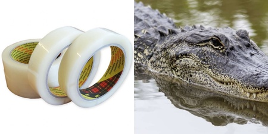
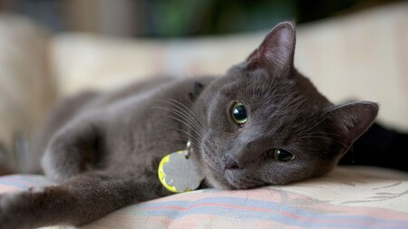
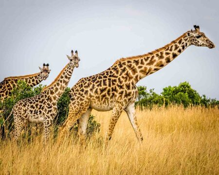

Bunu Biliyor Muydunuz?
1. Jaguarlar dişleri sayesinde kaplumbağaları kabuğundan ısırabilir
Yırtıcı hayvanlar söz konusu olunca, dişlerinin ısırma kuvvetlerini göz ardı etmek imkansız. Jaguarlar
aslan ve kaplanlardan sonra, ısırma gücü en kuvvetli canlılardır. Jaguarlar güçlü dişleri sayesinde
kaplumbağaları kabuğundan tutarak ısırabilirler!
Bunu Biliyor Muydunuz?
2. Timsahlar güçlü çene yapılarına sahip olsalar da ağızlarını selobant ile kapatmak mümkün

Timsahlar da güçlü çenelere sahip yırtıcı hayvanlar olarak bilinir ve ısırma güçleri yaklaşık 2000 kilo
kadardır. Ancak şaşırtıcı bir gerçek vardır ki, bir selobant yardımı ile timsahların ağızlarını bantlayarak
kapayabilirsiniz. Bunun sebebi ise; timsahların çok güçlü çene yapısına sahip hayvanlar olmasına rağmen,
ağızlarını açmak için kullandıkları kasların gücünün daha zayıf olması. Yani bir timsahın ağzını selobant ile
ve korkmadığınız takdirde ellerinizi kullanarak da kapatabilirsiniz!
Bunu Biliyor Muydunuz?
3. Kedilerin göz kırpması size güvendiğini gösterir

Belki dikkatimizi daha önce çekmeyen şaşırtıcı bir gerçek daha! Kediler beden diline karşı oldukça duyarlı
hayvanlardır. Karşısındaki canlının beden diline göre tehdidi ya da sevgiyi algılayabilen bu hayvanlar, göz
kırpmasını bir güven sinyali olarak algılarlar. Kedilere göz kırparak yaklaştığınızda sizi tehlikeli bir canlı
olarak görmeyeceklerdir ve karşılığında göz kırparak size güvendiklerini göstereceklerdir.
Kedilerin bu özelliğini doğrulayan hayvanlar olduğunu gösteren video için tıklayınız!
Bunu Biliyor Muydunuz?
6. Zürafalar, insanların duyamayacağı frekansta iletişim kurabilirler

Bu sevimli ve ortalama 4-5 metre boyundaki hayvanlar kendi aralarında infrasonik ses yardımıyla, yani
insanların işitemeyeceği kadar düşük frekansta olan seslerle iletişim kurabilirler. Ayrıca zürafalar bazı
sesleri de çıkarabilirler, bunlar: öksürme sesi, miyavlama ve tıslama sesi olarak örneklendirilebilir.
Yapılan araştırmalar sonucu, bir dişi zürafanın tıslaması genç bir zürafaya kızdığını ve bir erkek zürafanın
öksürmesi dişi zürafaya olan sevgisini gösterir.